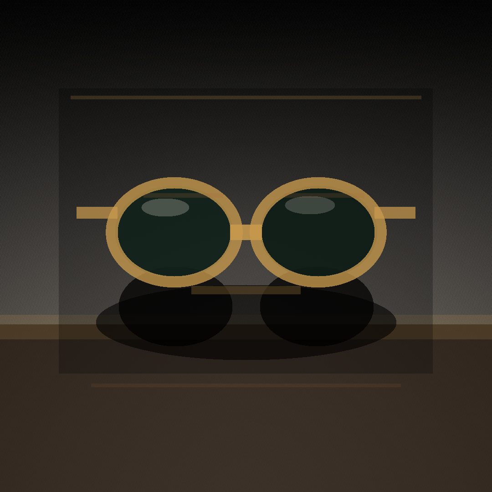

Post 01assets/legacy_optical_noir_post_01.png
ForgeGraph client handoff
Paquete armado desde el prompt operativo, con estrategia, contenido, assets, medición, QA y evidencia de linaje listos para aprobación. No se afirma publicación en vivo: el lanzamiento queda condicionado a aprobación y conectores reales.
Qué aprobar
Linaje
Engagement d3dc8dbd-9eb4-4361-a24d-7d1006e57cf9
Whiteboard f4f52d28-502b-449f-b133-f6caba760113
No Markdown files included.
Assets



Codex Strategy Brief
# Strategy Brief: Legacy Optical Noir Weekend Social Launch
## Engagement Context
Legacy needs a weekend-ready social launch package for the **Optical Noir** campaign. The run must be owned end-to-end by ForgeGraph, moving through strategy, brand, channel, CRM, analytics, QA, and client approval before delivery.
This brief establishes the strategic foundation before any creative asset production begins. It defines the campaign direction, operating constraints, production rules, approval flow, delivery format, and evidence requirements for the full Atlas agency run.
## Stage
**Department:** Strategy Research
**Stage Slug:** `strategy_research`
**Run Type:** Client-facing Atlas agency sprint
**Client:** Legacy
**Campaign:** Legacy Optical Noir Weekend Social Launch
## Strategic Objective
Launch a polished weekend social campaign for Legacy Optical Noir that positions the collection as refined, cinematic, and premium without relying on people, logos, or embedded text in the generated visual assets.
The campaign should create immediate visual interest for social channels while preserving flexibility for downstream layout, HTML/PDF packaging, and client approval workflows.
## Core Campaign Idea
**Optical Noir** should feel like a premium sunglasses story told through atmosphere, shape, reflection, contrast, and material detail.
The visual system should lean into:
- Black and smoked lens surfaces
- Glossy acetate, metal hinges, and refined frame silhouettes
- Hard light, shadow, reflection, and editorial still-life styling
- Weekend launch energy without nightclub clichés
- Luxury restraint rather than loud promotion
The campaign should communicate confidence, taste, and limited-window attention while avoiding over-designed or logo-dependent creative.
## Audience Assumption
The target audience is style-aware consumers who respond to premium eyewear cues, visual sophistication, and concise social storytelling.
The campaign should speak to people who value:
- Distinct personal style
- Quality materials and design
- Cinematic presentation
- Weekend-ready fashion
- Minimal, premium brand language
## Strategic Guardrails
All downstream departments must follow these rules:
1. Strategy must be approved before asset production begins.
2. Creative assets must be generated through a Codex-backed media worker.
3. Sunglasses visuals must be fresh and campaign-specific.
4. Generated media must contain:
- No text
- No logos
- No people
- No recognizable third-party branding
5. Client-facing outputs must not include Markdown files.
6. Final client ZIP may contain only:
- HTML
- PDF
- PNG
- Manifest
7. WhatsApp delivery must go to Mike only.
8. WhatsApp copy must be brief, concrete, and delivery-focused.
9. Durable receipt and evidence must be captured and retained.
10. QA must verify format, content, asset compliance, and delivery evidence before client approval.
## Required Department Pipeline
The Atlas run must proceed through the following departments in order:
1. **Strategy Research**
- Define campaign objective, audience, concept, constraints, and operating plan.
- Confirm that strategy precedes creative production.
2. **Brand**
- Translate Optical Noir into a usable visual and verbal direction.
- Define tone, style, color direction, typography guidance for layouts, and campaign messaging.
- Ensure brand expression remains premium and restrained.
3. **Channel**
- Adapt the campaign for weekend social use.
- Define social placements, recommended post formats, and concise caption logic.
- Ensure assets remain usable across feed, story, and supporting preview formats.
4. **CRM**
- Prepare supporting customer-facing copy where needed.
- Keep language concise and commercially useful.
- Avoid overexplaining the campaign concept.
5. **Analytics**
- Define tracking expectations and performance signals.
- Include recommended metrics for launch review:
- Reach
- Engagement rate
- Saves
- Shares
- Click-throughs
- Story completion
- Product interest signals
6. **QA**
- Verify asset compliance:
- No text in generated images
- No logos
- No people
- No unauthorized marks
- Verify client package contents:
- HTML only where expected
- PDF only where expected
- PNG only where expected
- Manifest included
- No Markdown files
- Verify delivery instructions:
- WhatsApp to Mike only
- Brief, concrete message
- Receipt/evidence retained
7. **Client Approval**
- Package the approved outputs into the client ZIP.
- Confirm delivery readiness.
- Preserve durable evidence and manifest.
## Asset Production Direction
The media worker should generate fresh sunglasses still-life assets with a premium editorial feel.
Recommended visual prompts should emphasize:
- Sunglasses as the only hero object
- Black, smoke, chrome, graphite, obsidian, or deep neutral palette
- Reflections, controlled highlights, glass, lacquer, stone, or dark satin surfaces
- Cinematic product photography
- No text, no logos, no people
- Clean negative space for downstream layout use
- High-resolution PNG export suitability
Avoid:
- Human models, hands, faces, silhouettes, or body parts
- Brand names or marks
- Text overlays or typographic elements
- Fake storefront signage
- Busy retail environments
- Obvious AI artifacts
- Overly futuristic or costume-like styling
## Messaging Direction
The campaign language should be short, premium, and launch-oriented.
Recommended message themes:
- Weekend arrival
- Noir-inspired style
- Sharp silhouettes
- Limited-time attention
- Refined contrast
- Designed presence
Sample campaign lines for downstream use:
- “Optical Noir arrives this weekend.”
- “Sharp frames. Dark polish. Weekend ready.”
- “A new Legacy look, cut in contrast.”
- “Noir mood. Clear intent.”
- “The weekend edit: Optical Noir.”
## Channel Strategy
Primary use should focus on social launch packaging for the weekend.
Recommended placements:
- Instagram feed
- Instagram story
- Facebook feed
- WhatsApp client preview
- Optional web preview via packaged HTML
Recommended creative formats:
- Square PNG for feed preview
- Vertical PNG for story preview
- HTML campaign preview for client review
- PDF summary for approval and archive
- Manifest documenting package contents and evidence
## QA Requirements
QA must confirm the following before delivery:
- Strategy has been completed before asset generation.
- All generated sunglasses assets are fresh and compliant.
- No people, logos, or text appear in generated assets.
- No Markdown files are included in the client package.
- ZIP contains only approved file types:
- `.html`
- `.pdf`
- `.png`
- manifest file
- Manifest lists all included assets.
- WhatsApp message is addressed to Mike only.
- WhatsApp message is brief and concrete.
- Delivery receipt or durable evidence is captured.
- Evidence is stored for internal lineage.
## Client Delivery Instruction
Delivery must be made by WhatsApp to **Mike only**.
The WhatsApp message should be concise and operational, for example:
> Mike, the Legacy Optical Noir weekend launch package is ready. ZIP includes the HTML preview, PDF, PNG assets, and manifest. No Markdown files included.
Do not include long explanations, internal process notes, or department lineage in the WhatsApp message.
## Evidence Requirements
The run must retain durable proof of:
- Final package contents
- QA approval
- Client ZIP creation
- WhatsApp delivery to Mike only
- Delivery timestamp
- Receipt, screenshot, or platform evidence where available
- Manifest matching the delivered ZIP
## Final Package Rule
The final client ZIP must contain only:
- HTML
- PDF
- PNG
- Manifest
No Markdown files may be sent to the client.
## Strategy Approval Criteria
This strategy stage is complete when the Atlas run has a clear campaign direction, production guardrails, department pipeline, QA requirements, delivery rules, and evidence expectations.
Assets should not be produced until this strategy brief is accepted as the source direction for the downstream Brand and Channel departments.
Message House
Legacy Optical Noir Message House
Source request: Create a client-ready Legacy Optical Noir weekend social launch package. ForgeGraph must own the run end-to-end: department pipeline, strategy before assets, Codex-backed media worker for fresh no-text/no-logo/no-people sunglasses assets, QA, client ZIP with HTML/PDF/PNG/manifest only, WhatsApp delivery to Mike only, and durable receipt/evidence. Do not send Markdown files to clients. Keep WhatsApp brief and concrete.
Positioning: lujo usable para CDMX; editorial, sobrio, accesible-premium.
Primary CTA: revisar estilos y aprobar piezas antes de publicar.
Tone: Spanish-first, concrete, low-hype, confident.
Crm Scripts
WhatsApp / DM scripts
Disponibilidad: Te confirmo modelo/color y te comparto alternativas si ya se movió.
Precio: Son piezas premium; te ayudo a elegir el par que mejor se vea y más uses.
Cierre: ¿Quieres que te aparte este modelo o prefieres ver dos opciones más?
Measurement Plan
Track post saves, replies, profile visits, link clicks, DMs, holds, sold/blocked status, and next action every 24h. Hold live claims until connector evidence exists.
Channel Asset Map
Channel Asset Map
Post 01: media_job=8adb9628-aab2-4f43-9dd8-fbfb9b5e848b, asset=956bd66e-43d5-422f-844a-8168bd56f59c, status=succeeded
Post 02: media_job=b2f5c1c5-f50e-47c2-b634-143b45a4bb83, asset=4bc49656-3ddc-4d19-b621-03dad09ede1c, status=succeeded
Post 03: media_job=8d462653-9719-467e-aee6-b78876980311, asset=85ed3fd4-50e2-4722-bfda-7ca18bbc6218, status=succeeded
Post 04: media_job=b51cdb9f-d4a3-4c5b-9360-e899c5f2e616, asset=d1472773-94c4-4fbd-ac4d-00ce03630002, status=succeeded
Post 05: media_job=b6fb207c-1257-4a7c-8349-3553c383d47a, asset=b7fdb2b0-58d8-46f1-90bd-ebd1bc4f0508, status=succeeded
Post 06: media_job=4fdebc51-5d7b-46f1-9137-75175b0c527a, asset=22418a02-797c-4bc3-bb35-3941be9d7e7f, status=succeeded
Qa Report
QA Report
Media jobs succeeded: 6/6
Client package formats: HTML, PDF, PNG, JSON manifest, ZIP; no Markdown files.
Policy: no live publishing claim; approval required before production launch.
Decision: ready for review
Prompt fuente
Create a client-ready Legacy Optical Noir weekend social launch package. ForgeGraph must own the run end-to-end: department pipeline, strategy before assets, Codex-backed media worker for fresh no-text/no-logo/no-people sunglasses assets, QA, client ZIP with HTML/PDF/PNG/manifest only, WhatsApp delivery to Mike only, and durable receipt/evidence. Do not send Markdown files to clients. Keep WhatsApp brief and concrete.